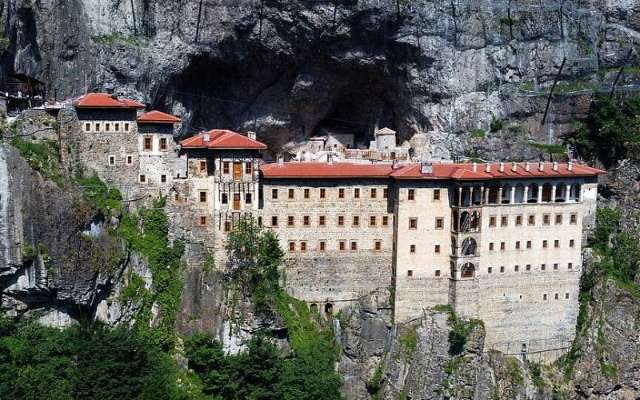
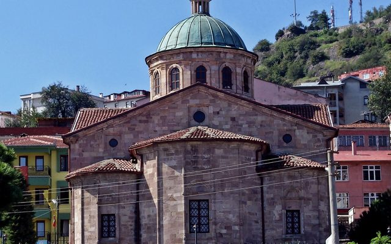

第一天清晨步行登上阿尔滕代雷山谷的苏美拉修道院，下午游览特拉布宗科斯塔基宅邸中的博物馆和小艾瓦瑟尔教堂。第二天在茶园间参观里泽博物馆和阿塔图尔克故居，回程参观吉雷松博物馆和圣母修道院。
第 1 天

苏美拉修道院位于马奇卡，在阿尔滕代雷山谷茂密的森林中，紧贴着高出谷底约 300 米的陡峭岩壁。相传它由两位雅典修士于 4 世纪末创建，用来供奉一幅据信由圣路加绘制的圣母像。在特拉布宗帝国和奥斯曼时期受到保护并扩建，一直使用到 1923 年。覆盖岩石教堂的层层壁画是它的瑰宝；经过长期修复后重新开放，沿林间小路即可到达。

特拉布宗博物馆设在一座宏伟的欧式宅邸中，这座宅邸于 20 世纪初为希腊银行家科斯塔基·泰奥菲拉克托斯而建。据说来自意大利的建材、彩绘天花板、木作和家具让建筑本身就成为一大看点。馆内展出古城特拉佩祖斯、特拉布宗帝国和奥斯曼时期的考古文物以及民俗藏品。

位于特拉布宗老城的小艾瓦瑟尔（圣安娜）教堂，被认为是城中现存最古老的拜占庭建筑之一。门上的铭文记载了 9 世纪皇帝巴西尔一世时期的修缮，表明它的起源还要更早。三廊巴西利卡平面、朴素的石砌和壁画遗痕，在热闹的街巷中映照出早期基督教时期的特拉布宗。
第 2 天

里泽博物馆介绍以翠绿山谷和茶园闻名的里泽的文化遗产。除考古文物外，民俗藏品占主导：木制家居用品、服饰、织物、铜器以及图卢姆风笛等乐器，反映了山海之间的生活；传统木制粮仓（塞伦德）展示了黑海建筑的巧思。

里泽阿塔图尔克故居博物馆是山坡上的一座历史别墅，阿塔图尔克在 1924 年访问时曾在此过夜。它建于 20 世纪初，优雅地融合了黑海木构建筑与欧洲风格，展出他的房间、当时的家具和照片；花园可俯瞰城市、茶园和大海。

位于吉雷松省谢宾卡拉希萨尔的圣母玛利亚修道院，是一座仿佛紧贴在峭壁上的壮观岩石修道院。作为黑海地区岩凿宗教建筑的佳作之一，修道院内仍保留着壁画痕迹。远远望去，它与岩石融为一体，建筑与环境都令人惊叹。攀登需要一些体力，但山谷景色和宁静氛围会让你觉得值得。

吉雷松博物馆设在海滨历史街区一座经修复的 19 世纪原戈戈拉教堂内，高挑的天花板和拱形窗户赋予博物馆独特的氛围。考古文物、钱币和民俗物品追溯了东黑海地区从古代到奥斯曼时期的历史。若与吉雷松城堡和海滨散步相结合，便能领略这座以榛子闻名的城市的历史一面；近海的吉雷松岛在古代与亚马逊女战士的传说有关。
按天安排的现成路线，帮助您规划行程。时间仅供参考；出发前请确认开放时间和路况。